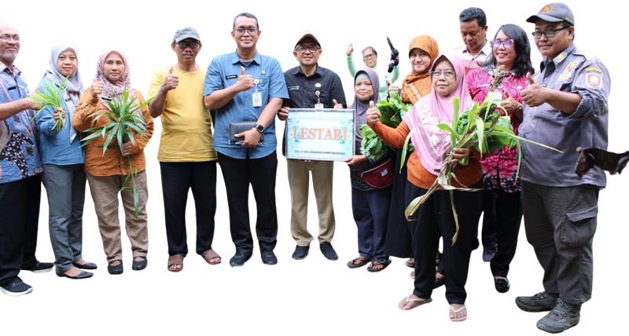
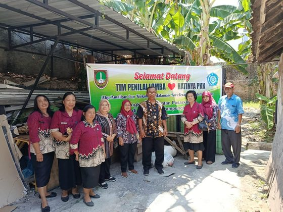
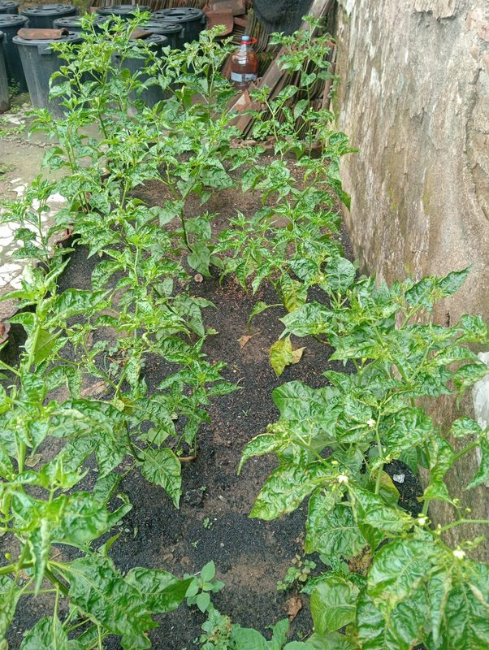

Kelurahan Kampung Baru · Kecamatan Pasar Kliwon · Kota Surakarta
Kampung ProKlim Lestari RW 03
Berawal dari keresahan soal kekeringan dan curah hujan yang makin sulit ditebak, warga Kampung Baru RW 03 memilih bergerak — menata saluran air, menghijaukan pekarangan, dan merawat kampung sendiri lewat enam program Kampung Iklim yang dikerjakan bersama.
Buku Profil Kampung ProKlim Lestari
Kenali berbagai program dan kegiatan Kampung ProKlim Lestari RW 03

Warga & tim ProKlim merayakan pengukuhan Kampung Lestari

Tentang Kami
Kenapa RW 03 yang bergerak?
RW 03 Kelurahan Kampung Baru dipilih sebagai salah satu lokasi Program Kampung Iklim (ProKlim) bukan tanpa alasan. Wilayah ini bergulat dengan persoalan iklim perkotaan yang nyata, terutama kekeringan akibat curah hujan yang kian rendah dan tak menentu.
Namun di balik tantangan itu, warga RW 03 punya modal yang sama pentingnya: kepedulian pada lingkungan sekitar dan kebiasaan terlibat aktif dalam berbagai kegiatan sosial — bekal yang membuat ProKlim punya alasan kuat untuk tumbuh di kampung ini.
Gerakan Cinta Lingkungan Secara Kolektif
- Menumbuhkan gerakan partisipatif, tempat warga ikut menata lingkungan tempat tinggalnya sendiri.
- Membangun gerakan lingkungan yang terstruktur dan terencana, bukan sekadar aksi sesaat.
- Merawat semuanya lewat kelembagaan yang terorganisir, supaya arahnya tidak putus di tengah jalan.
Profil Kampung
RW 03 dalam angka

Sebagian lahan pekarangan warga RW 03 sudah dialihkan untuk menanam sayur dan cabai sehari-hari — salah satu kebiasaan kecil yang menopang ketahanan pangan kampung.
Program ProKlim
Enam arah kerja warga RW 03
Ada enam kelompok program ProKlim yang berjalan di RW 03, mulai dari pengendalian banjir sampai penguatan kelembagaan warga. Uraian lengkap tiap kegiatan, lengkap dengan dokumentasi before–after, menyusul di bagian ini.
-
Pengendalian Kekeringan dan Banjir
Pembuatan saluran air, saluran & pengecoran, pavingisasi, keduk walet.
-
Peningkatan Ketahanan Pangan dan Tutupan Vegetasi
Budidaya lele, sayuran & buah, ternak unggas, aquaponik.
-
Pengendalian Penyakit Terkait Iklim
Pencegahan stunting, pemberian PMT, jumantik, pemantauan Posyandu.
-
Pengelolaan Sampah, Limbah Padat dan Cair
Bank Sampah “Barokah” RW 03, budidaya maggot.
-
Penggunaan EBT, Konservasi dan Penghematan Energi
Pemanfaatan tata surya.
-
Data Kelembagaan, Masyarakat dan Dukungan Keberlanjutan
Kerja bakti, UMKM, Posyandu, kolaborasi & pendampingan.
Detail kegiatan, foto before–after, dan status tiap program akan ditambahkan pada tahap berikutnya.
Peta Kampung
Temukan Kampung ProKlim Lestari RW 03
Kampung ProKlim Lestari berada di RW 03, Kelurahan Kampung Baru, Kecamatan Pasar Kliwon, Kota Surakarta.
Buka Lokasi di Google Maps